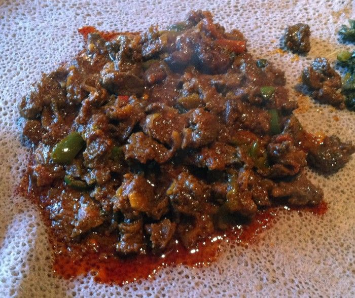

Atkilt Wot
Home

Description
Tibs is a popular Ethiopian dish made with sautéed beef or lamb, cooked in a spiced oil with onions, garlic, and peppers. It can range from mild to spicy and is often served sizzling hot in a cast iron pan. Tibs is a go-to dish for special occasions or when hosting guests.
The dish showcases the bold, earthy flavors of Ethiopian cuisine and pairs perfectly with injera, allowing you to scoop up the meat and juices with your hands in traditional style.
Ingredients
- 1 pound beef or lamb, cut into small cubes
- 1 medium red onion, sliced
- 2 tablespoons niter kibbeh (or regular butter/oil)
- 2 cloves garlic, minced
- 1 tablespoon berbere spice (optional for spicy version)
- 1 green chili, sliced (optional)
- Salt and black pepper to taste
Steps
- Heat niter kibbeh or oil in a pan over medium-high heat.
- Add onions and sauté until lightly browned, about 4–5 minutes.
- Stir in garlic and optional green chili, cook for another 1 minute.
- Add the beef or lamb cubes and sear until browned on all sides.
- Sprinkle in berbere spice if using, and stir to coat the meat evenly.
- Reduce heat and let the meat cook through, about 5–7 minutes, depending on thickness.
- Season with salt and black pepper to taste.
- Serve hot with injera or flatbread.